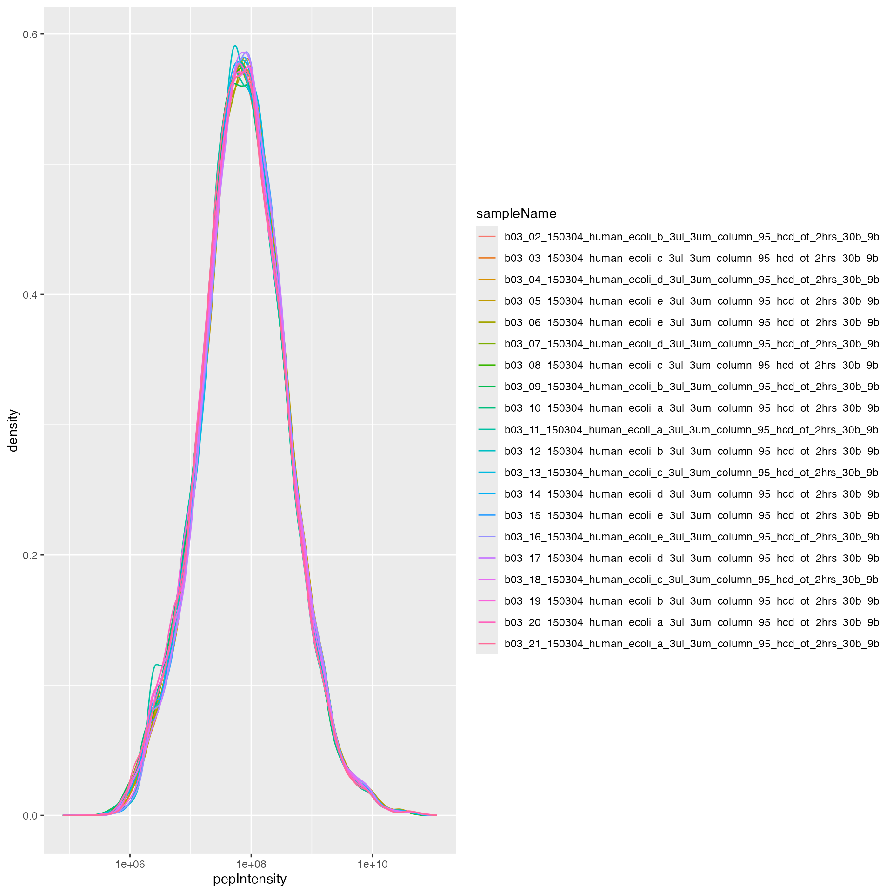
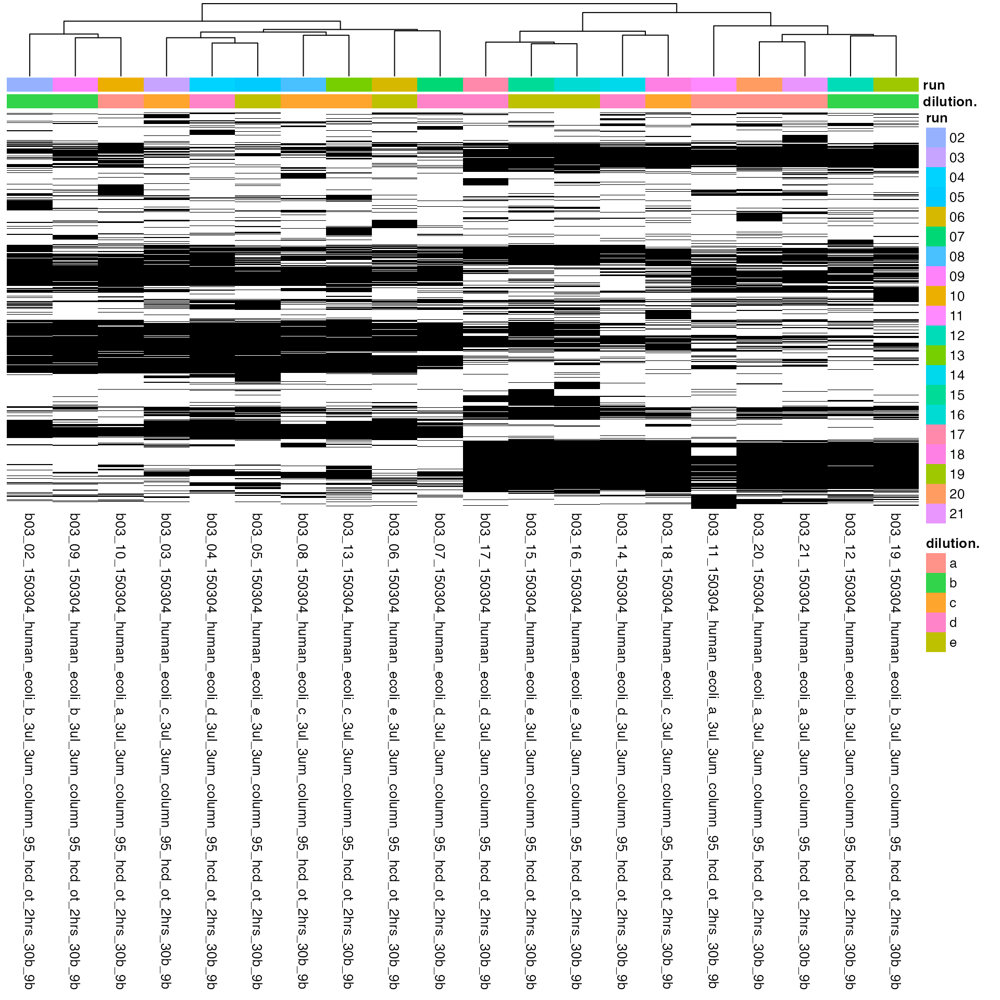
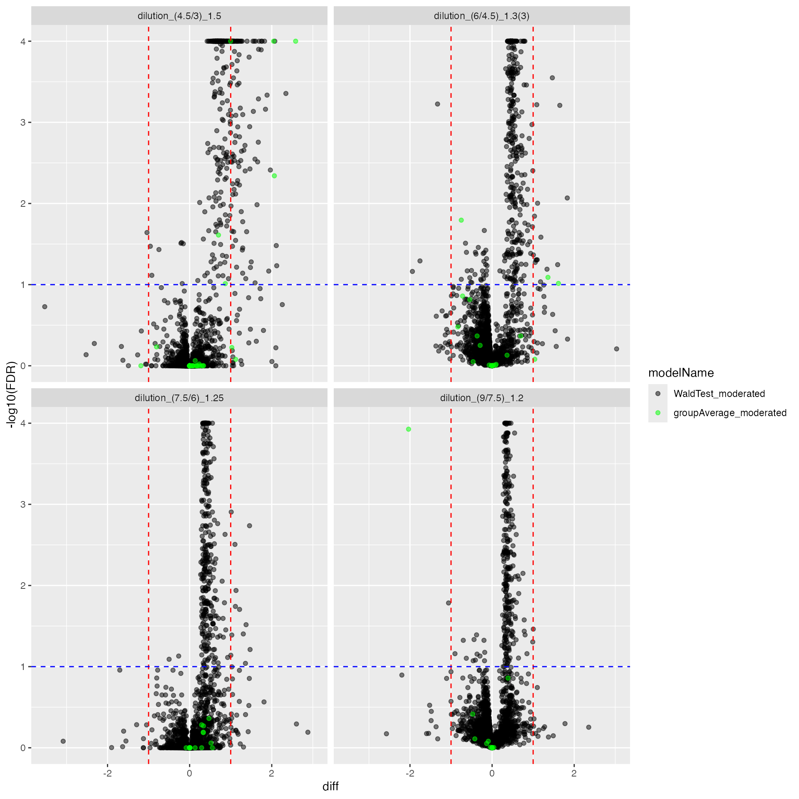
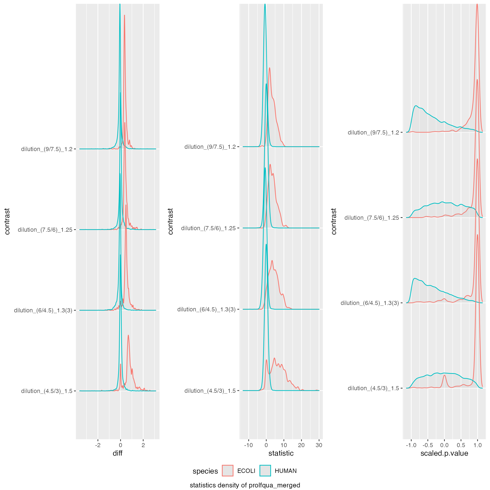
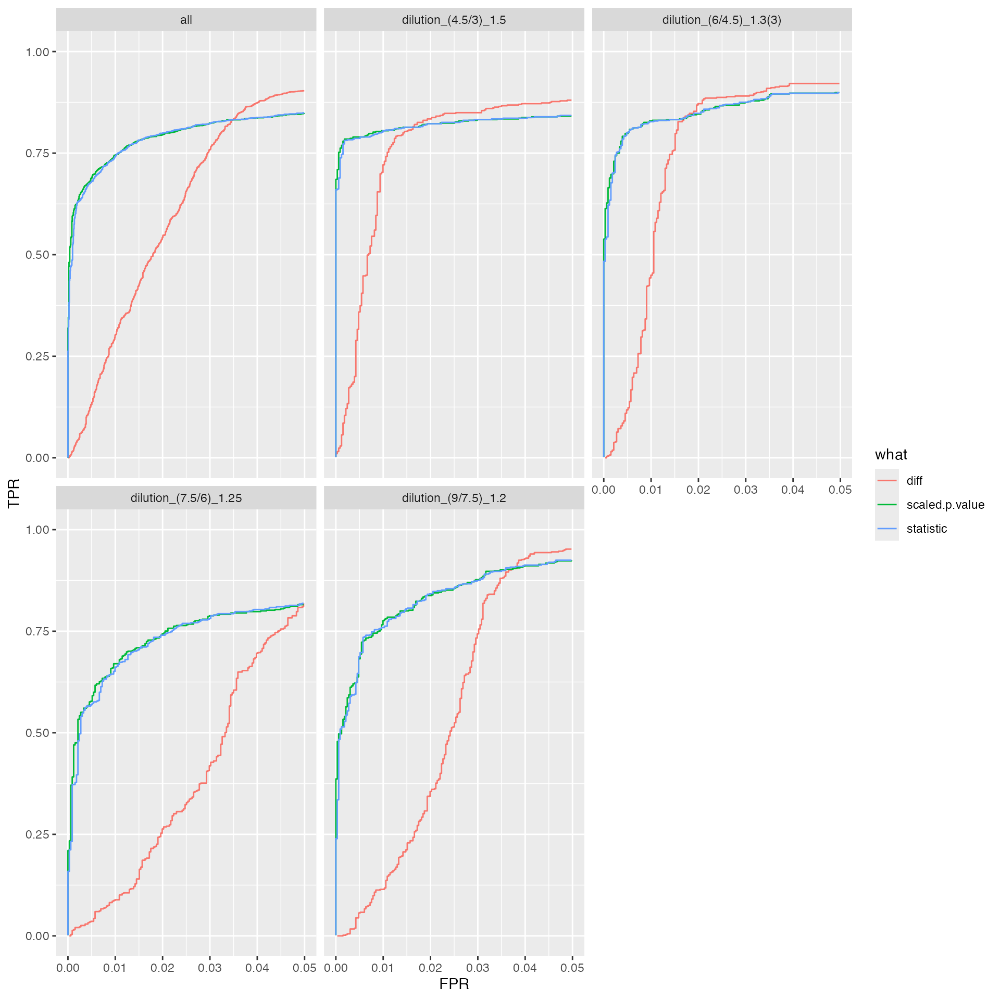
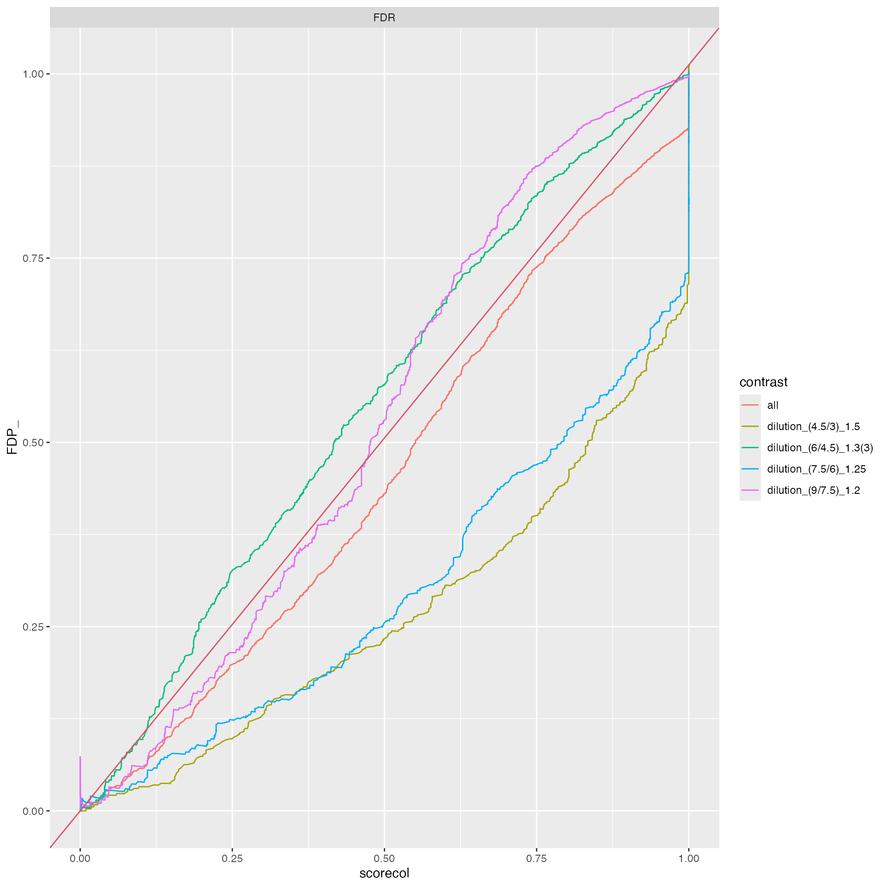
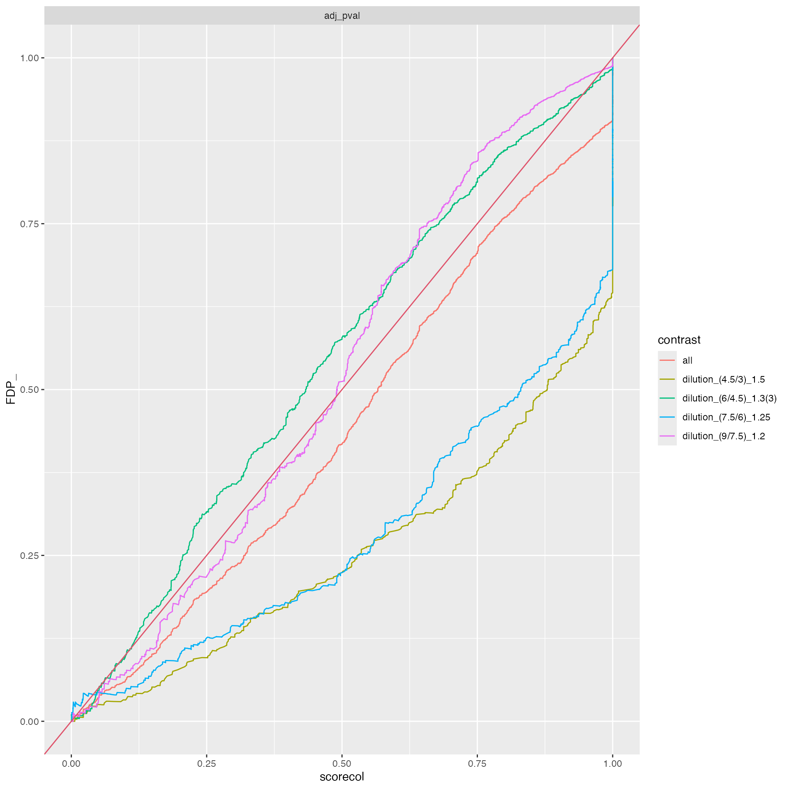
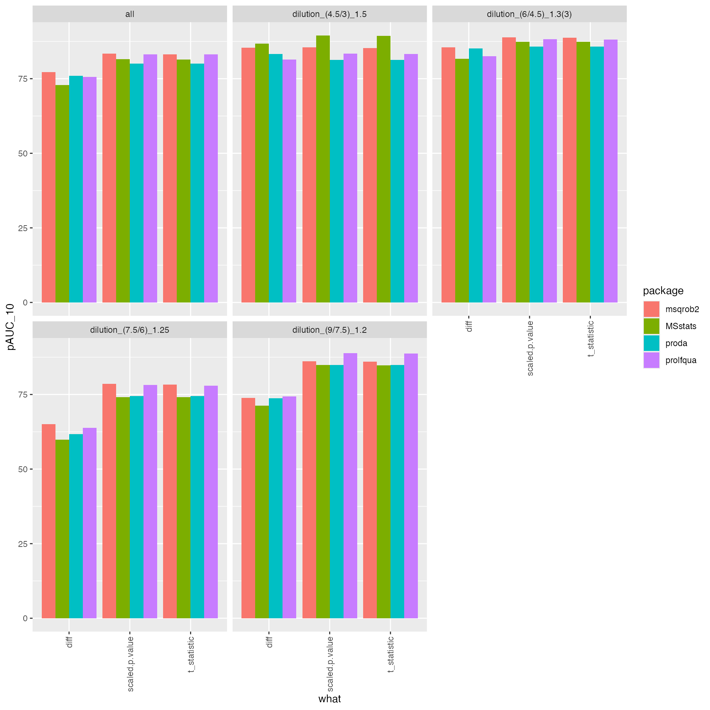

DEA benchmark IonStar/FragPipeV14/MSstats.tsv
Witold E. Wolski
2024-06-28
Source:vignettes/BenchmarkFragPipeMSStats.Rmd
BenchmarkFragPipeMSStats.RmdPlease download and install the prolfquadata package
from github
conflicted::conflict_prefer("filter", "dplyr")Data preprocessing
Load data
datadir <- file.path(find.package("prolfquadata") , "quantdata")
inputFragfile <- file.path(datadir, "MSFragger_IonStar2018_PXD003881.zip")
inputAnnotation <- file.path(datadir, "annotation_Ionstar2018_PXD003881.xlsx")
annotation <- readxl::read_xlsx(inputAnnotation)
unzip(inputFragfile, list = TRUE)## Name Length
## 1 IonstarWithMSFragger/combined_peptide.tsv 10202897
## 2 IonstarWithMSFragger/combined_protein.tsv 5288537
## 3 IonstarWithMSFragger/fragger.params 8423
## 4 IonstarWithMSFragger/fragpipe_2021-02-18_20-02-51.config 7509
## 5 IonstarWithMSFragger/log_2021-02-18_23-40-52.txt 585337
## 6 IonstarWithMSFragger/mbr_ion.tsv 52755282
## 7 IonstarWithMSFragger/MSstats.csv 147944334
## 8 IonstarWithMSFragger/reprint.int.tsv 861960
## 9 IonstarWithMSFragger/reprint.spc.tsv 276563
## Date
## 1 2021-02-18 23:40:00
## 2 2021-02-18 23:40:00
## 3 2021-02-18 20:02:00
## 4 2021-02-18 20:02:00
## 5 2021-02-18 23:41:00
## 6 2021-02-18 23:39:00
## 7 2021-02-18 23:40:00
## 8 2021-02-18 23:40:00
## 9 2021-02-18 22:47:00
msstats <- read.csv(
unz(inputFragfile,"IonstarWithMSFragger/MSstats.csv"),
header = TRUE,
sep = ",",
stringsAsFactors = FALSE)
msstats <- tibble::tibble(msstats)
msstats$Run <- tolower(msstats$Run)
merged <- dplyr::inner_join(annotation, msstats, by = c("raw.file" = "Run"))
summedPep <- merged |> dplyr::group_by(raw.file, run_ID, sample, ProteinName, PeptideSequence) |> dplyr::summarize(nprecursor = dplyr::n(),pepIntensity = sum(Intensity, na.rm = TRUE), .groups = "drop")Create prolfqua configuration
atable <- prolfqua::AnalysisTableAnnotation$new()
atable$fileName = "raw.file"
atable$hierarchy[["protein_Id"]] <- c("ProteinName")
atable$hierarchy[["peptide_Id"]] <- c("PeptideSequence")
atable$hierarchyDepth <- 1
atable$set_response("pepIntensity")
atable$factors[["dilution."]] = "sample"
atable$factors[["run"]] = "run_ID"
atable$factorDepth <- 1
config <- prolfqua::AnalysisConfiguration$new(atable)
adata <- prolfqua::setup_analysis(summedPep, config)
lfqdata <- prolfqua::LFQData$new(adata, config)
lfqdata$hierarchy_counts()## # A tibble: 1 × 3
## isotopeLabel protein_Id peptide_Id
## <chr> <int> <int>
## 1 light 5122 31107
lfqdata$filter_proteins_by_peptide_count()
lfqdata$hierarchy_counts()## # A tibble: 1 × 3
## isotopeLabel protein_Id peptide_Id
## <chr> <int> <int>
## 1 light 3904 29889
lfqdata$remove_small_intensities()
lfqdata$hierarchy_counts()## # A tibble: 1 × 3
## isotopeLabel protein_Id peptide_Id
## <chr> <int> <int>
## 1 light 3904 29889
knitr::kable(lfqdata$hierarchy_counts(), caption = "number of proteins and peptides.")| isotopeLabel | protein_Id | peptide_Id |
|---|---|---|
| light | 3904 | 29889 |
Normalize data using human proteins
pl <- lfqdata$get_Plotter()
pl$intensity_distribution_density()
subset_h <- lfqdata$get_copy()$get_Transformer()$log2()$lfq
subset_h$data <- subset_h$data |> dplyr::filter(grepl("HUMAN", protein_Id))
tr <- lfqdata$get_Transformer()
lfqdataPeptideNorm <- tr$log2()$robscale_subset(lfqsubset = subset_h)$lfq
pl <- lfqdataPeptideNorm$get_Plotter()
pl$intensity_distribution_density()
hm <- pl$NA_heatmap()
hm
DEA using prolfqua
Contrasts <- c(
"dilution_(9/7.5)_1.2" = "dilution.e - dilution.d",
"dilution_(7.5/6)_1.25" = "dilution.d - dilution.c",
"dilution_(6/4.5)_1.3(3)" = "dilution.c - dilution.b",
"dilution_(4.5/3)_1.5" = "dilution.b - dilution.a"
)
lmmodel <- "~ dilution."
lmmodel <- paste0(lfqdataNormalized$config$table$get_response() , lmmodel)
modelFunction <- prolfqua::strategy_lm( lmmodel, model_name = "Model")
mod <- prolfqua::build_model(lfqdataNormalized$data, modelFunction)
contr <- prolfqua::Contrasts$new(mod, Contrasts)
contrimp <- prolfqua::ContrastsMissing$new(lfqdataNormalized, Contrasts)
merged <- prolfqua::merge_contrasts_results(contr, contrimp)
mergedmod <- prolfqua::ContrastsModerated$new(merged$merged)
cp <- mergedmod$get_Plotter()
cp$volcano()$FDR
Benchmarking
ttd <- prolfqua::ionstar_bench_preprocess(mergedmod$get_contrasts())
benchmark_prolfqua <- prolfqua::make_benchmark(ttd$data,
model_description = "prolfqua_merged",
model_name = "prolfqua_merged",
FDRvsFDP = list(list(score = "FDR", desc = FALSE))
)
knitr::kable(benchmark_prolfqua$pAUC_summaries()$ftable$content)| contrast | what | AUC | pAUC_10 | pAUC_20 |
|---|---|---|---|---|
| all | diff | 95.08941 | 75.62771 | 85.05479 |
| all | scaled.p.value | 96.04553 | 83.17176 | 87.64209 |
| all | statistic | 96.03922 | 83.09677 | 87.62712 |
| dilution_(4.5/3)_1.5 | diff | 93.72267 | 81.39620 | 85.65552 |
| dilution_(4.5/3)_1.5 | scaled.p.value | 93.58459 | 83.35680 | 85.19206 |
| dilution_(4.5/3)_1.5 | statistic | 93.58722 | 83.28201 | 85.20315 |
| dilution_(6/4.5)_1.3(3) | diff | 95.03489 | 82.50829 | 88.05018 |
| dilution_(6/4.5)_1.3(3) | scaled.p.value | 96.92545 | 88.24154 | 90.65322 |
| dilution_(6/4.5)_1.3(3) | statistic | 96.90698 | 88.16417 | 90.61789 |
| dilution_(7.5/6)_1.25 | diff | 94.31033 | 63.86013 | 79.61097 |
| dilution_(7.5/6)_1.25 | scaled.p.value | 94.87680 | 78.15999 | 83.92652 |
| dilution_(7.5/6)_1.25 | statistic | 94.86947 | 77.91034 | 83.86978 |
| dilution_(9/7.5)_1.2 | diff | 96.50924 | 74.39250 | 86.26315 |
| dilution_(9/7.5)_1.2 | scaled.p.value | 98.23989 | 88.83473 | 93.14924 |
| dilution_(9/7.5)_1.2 | statistic | 98.22705 | 88.70681 | 93.08966 |
prolfqua::table_facade(benchmark_prolfqua$smc$summary, "Nr of estimated contrasts")| nr_missing | protein_Id |
|---|---|
| 0 | 3899 |
benchmark_prolfqua$plot_score_distribution()
benchmark_prolfqua$plot_ROC(0.05)
benchmark_prolfqua$plot_FDRvsFDP()
DEA using proDA
se <- prolfqua::LFQDataToSummarizedExperiment(lfqdataNormalized)
fit <- proDA::proDA(se, design = ~ dilution. - 1, data_is_log_transformed = TRUE)
contr <- list()
contr[["dilution_(9/7.5)_1.2"]] <- data.frame(
contrast = "dilution_(9/7.5)_1.2",
proDA::test_diff(fit, contrast = "dilution.e - dilution.d"))
contr[["dilution_(7.5/6)_1.25"]] <- data.frame(
contrast = "dilution_(7.5/6)_1.25",
proDA::test_diff(fit, contrast = "dilution.d - dilution.c"))
contr[["dilution_(6/4.5)_1.3(3)"]] <- data.frame(
contrast = "dilution_(6/4.5)_1.3(3)",
proDA::test_diff(fit, contrast = "dilution.c - dilution.b"))
contr[["dilution_(4.5/3)_1.5"]] <- data.frame(
contrast = "dilution_(4.5/3)_1.5",
proDA::test_diff(fit, contrast = "dilution.b - dilution.a" ))
bb <- dplyr::bind_rows(contr)Benchmarking
ttd <- prolfqua::ionstar_bench_preprocess( bb , idcol = "name" )
benchmark_proDA <- prolfqua::make_benchmark(ttd$data,
contrast = "contrast",
toscale = c("pval"),
fcestimate = "diff",
benchmark = list(
list(score = "diff", desc = TRUE),
list(score = "t_statistic", desc = TRUE),
list(score = "scaled.pval", desc = TRUE)
),
model_description = "proDA_medpolishInt",
model_name = "proDA",
FDRvsFDP = list(list(score = "adj_pval", desc = FALSE))
, hierarchy = c("name"), summarizeNA = "t_statistic"
)
sumarry <- benchmark_proDA$smc$summary
prolfqua::table_facade(sumarry, caption = "nr of proteins with 0, 1, 2, 3 missing contrasts.")| nr_missing | name |
|---|---|
| 0 | 3899 |
knitr::kable(benchmark_proDA$pAUC_summaries()$ftable$content)| contrast | what | AUC | pAUC_10 | pAUC_20 |
|---|---|---|---|---|
| all | diff | 94.93019 | 75.92895 | 85.36415 |
| all | scaled.pval | 95.09114 | 80.01183 | 84.65845 |
| all | t_statistic | 95.09114 | 80.01183 | 84.65845 |
| dilution_(4.5/3)_1.5 | diff | 94.60909 | 83.28407 | 87.91710 |
| dilution_(4.5/3)_1.5 | scaled.pval | 92.89639 | 81.23681 | 83.65417 |
| dilution_(4.5/3)_1.5 | t_statistic | 92.89639 | 81.23681 | 83.65417 |
| dilution_(6/4.5)_1.3(3) | diff | 94.99311 | 85.11985 | 89.62882 |
| dilution_(6/4.5)_1.3(3) | scaled.pval | 96.47293 | 85.71922 | 88.54923 |
| dilution_(6/4.5)_1.3(3) | t_statistic | 96.47293 | 85.71922 | 88.54923 |
| dilution_(7.5/6)_1.25 | diff | 93.61306 | 61.76129 | 77.63361 |
| dilution_(7.5/6)_1.25 | scaled.pval | 93.28118 | 74.51733 | 80.27792 |
| dilution_(7.5/6)_1.25 | t_statistic | 93.28118 | 74.51733 | 80.27792 |
| dilution_(9/7.5)_1.2 | diff | 96.27909 | 73.69461 | 85.71510 |
| dilution_(9/7.5)_1.2 | scaled.pval | 97.49181 | 84.89753 | 89.57930 |
| dilution_(9/7.5)_1.2 | t_statistic | 97.49181 | 84.89753 | 89.57930 |
prolfqua::table_facade(benchmark_proDA$smc$summary, "Nr of estimated contrasts")| nr_missing | name |
|---|---|
| 0 | 3899 |
benchmark_proDA$plot_score_distribution()
benchmark_proDA$plot_ROC(0.05)
benchmark_proDA$plot_FDRvsFDP()
DEA using msqrob2
To use proDA, we need to create an
SummarizedExperiment. We use the to_wide
function of prolfqua to get the data in in the
SummarizedExperiment compatible format.
Defining Contrasts and computing group comparisons
As usual, two steps are required, first fit the models, then compute the contrasts.
prlm <- msqrobHurdle(pe,
i = "protein",
formula = ~dilution.,
overwrite = TRUE)Since msqrob does not report average abundances, we are computing them for each contrast.
st <- lfqdataNormalized$get_Stats()
protAbundanceIngroup <- st$stats()
protAbundanceIngroup <- protAbundanceIngroup |>
tidyr::pivot_wider(
id_cols = protein_Id,
names_from = dilution.,
names_prefix = "abd.",
values_from = meanAbundance)
L <- makeContrast(c("dilution.e-dilution.d=0",
"dilution.d-dilution.c=0",
"dilution.c-dilution.b=0",
"dilution.b=0"),
parameterNames = c("dilution.e",
"dilution.d",
"dilution.c",
"dilution.b"))
prlm <- hypothesisTestHurdle(prlm, i = "protein", L, overwrite = TRUE)
protAbundanceIngroup <- protAbundanceIngroup |> dplyr::mutate( avgAbd.e.d = mean( c(abd.e,abd.d), na.rm = TRUE) )
protAbundanceIngroup <- protAbundanceIngroup |> dplyr::mutate( avgAbd.d.c = mean( c(abd.d,abd.c), na.rm = TRUE) )
protAbundanceIngroup <- protAbundanceIngroup |> dplyr::mutate( avgAbd.c.b = mean( c(abd.c,abd.b), na.rm = TRUE) )
protAbundanceIngroup <- protAbundanceIngroup |> dplyr::mutate( avgAbd.b.a = mean( c(abd.b,abd.a), na.rm = TRUE) )
xx <- rowData(prlm[["protein"]])
hurdle <- xx[grepl("hurdle_",names(xx))]
res <- list()
for (i in names(hurdle)) {
hurdle[[i]]$contrast <- i
res[[i]] <- prolfqua::matrix_to_tibble(hurdle[[i]], preserve_row_names = "name")
}
hurdle <- dplyr::bind_rows(res)Now we need to merge the results of both models msqrobHurdleIntensity
and msqrobHurdleCount. To find out which models were not estimated by
msqrobHurdleIntensity we check for NA’s and use the
anti_join to select those from the
msqrobHurdleCount models.
logFC <- hurdle |> dplyr::select("name","contrast", starts_with("logFC"))
logFC <- dplyr::filter(logFC ,!is.na(logFCt))
logFC$modelName <- "msqrobHurdleIntensity"
names(logFC) <- c("name","contrast","logFC","se","df","t","pval","modelName")
logOR <- hurdle |> dplyr::select("name","contrast", starts_with("logOR"))
logOR$modelName <- "msqrobHurdleCount"
names(logOR) <- c("name","contrast","logFC","se","df","t","pval","modelName")
ddd <- dplyr::anti_join(logOR , logFC, by = c("name", "contrast"))
all <- dplyr::bind_rows(ddd , logFC) |> dplyr::arrange(contrast, name)
all <- prolfqua::adjust_p_values(all, column = "pval", group_by_col = "contrast")
all$contrast |> unique()## [1] "hurdle_dilution.b" "hurdle_dilution.c - dilution.b"
## [3] "hurdle_dilution.d - dilution.c" "hurdle_dilution.e - dilution.d"
protAbundanceIngroup <- protAbundanceIngroup |>
dplyr::select(-starts_with("abd")) |>
tidyr::pivot_longer(starts_with("avgAbd"), names_to = "contrast" ,values_to = "avgAbd")
protAbundanceIngroup <- protAbundanceIngroup |>
dplyr::mutate(contrast =
dplyr::case_when(contrast == "avgAbd.e.d" ~ "dilution_(9/7.5)_1.2",
contrast == "avgAbd.d.c" ~ "dilution_(7.5/6)_1.25",
contrast == "avgAbd.c.b" ~ "dilution_(6/4.5)_1.3(3)",
contrast == "avgAbd.b.a" ~ "dilution_(4.5/3)_1.5",
TRUE ~ "something wrong"))
all <- all |> dplyr::mutate(contrast = dplyr::case_when(
contrast == "hurdle_dilution.e - dilution.d" ~ "dilution_(9/7.5)_1.2",
contrast == "hurdle_dilution.d - dilution.c" ~ "dilution_(7.5/6)_1.25",
contrast == "hurdle_dilution.c - dilution.b" ~ "dilution_(6/4.5)_1.3(3)",
contrast == "hurdle_dilution.b" ~ "dilution_(4.5/3)_1.5",
TRUE ~ "something wrong"))
stopifnot(sum(all$contrast == "something wrong") == 0 )
stopifnot(sum(all$contrast == "something wrong") == 0 )
bb <- dplyr::inner_join(all, protAbundanceIngroup, by = c("name" = "protein_Id", "contrast" = "contrast"))Benchmarking
Here we use proflqua benchmark functions to generate
some summaries.
ttd <- prolfqua::ionstar_bench_preprocess( bb , idcol = "name" )
benchmark_msqrob <- prolfqua::make_benchmark(ttd$data,
contrast = "contrast",
toscale = c("pval"),
fcestimate = "logFC",
benchmark = list(
list(score = "logFC", desc = TRUE),
list(score = "t", desc = TRUE),
list(score = "scaled.pval", desc = TRUE)
),
model_description = "msqrob_QFeature",
model_name = "msqrob2",
FDRvsFDP = list(list(score = "FDR", desc = FALSE))
, hierarchy = c("name"), summarizeNA = "t"
)
sumarry <- benchmark_msqrob$smc$summary
prolfqua::table_facade(sumarry, caption = "nr of proteins with 0, 1, 2, 3 missing contrasts.")| nr_missing | name |
|---|---|
| 0 | 3899 |
res <- benchmark_msqrob$pAUC_summaries()
knitr::kable(res$ftable$content,caption = res$ftable$caption)| contrast | what | AUC | pAUC_10 | pAUC_20 |
|---|---|---|---|---|
| all | logFC | 95.24876 | 76.99290 | 86.12322 |
| all | scaled.pval | 96.10626 | 83.39968 | 87.89613 |
| all | t | 96.08175 | 83.20067 | 87.77312 |
| dilution_(4.5/3)_1.5 | logFC | 95.89089 | 84.70617 | 90.08557 |
| dilution_(4.5/3)_1.5 | scaled.pval | 95.75977 | 85.60059 | 88.88683 |
| dilution_(4.5/3)_1.5 | t | 95.72742 | 85.32153 | 88.72073 |
| dilution_(6/4.5)_1.3(3) | logFC | 95.79066 | 85.67125 | 90.58978 |
| dilution_(6/4.5)_1.3(3) | scaled.pval | 97.06162 | 88.96471 | 92.02477 |
| dilution_(6/4.5)_1.3(3) | t | 97.04140 | 88.81719 | 91.95127 |
| dilution_(7.5/6)_1.25 | logFC | 93.42381 | 64.99028 | 79.50549 |
| dilution_(7.5/6)_1.25 | scaled.pval | 94.13006 | 78.54273 | 83.30135 |
| dilution_(7.5/6)_1.25 | t | 94.10117 | 78.38747 | 83.14145 |
| dilution_(9/7.5)_1.2 | logFC | 95.67234 | 73.38976 | 84.54472 |
| dilution_(9/7.5)_1.2 | scaled.pval | 97.59735 | 86.16488 | 90.59571 |
| dilution_(9/7.5)_1.2 | t | 97.57764 | 85.95753 | 90.48868 |
res$barpROC curves
#res$ftable
benchmark_msqrob$plot_ROC(xlim = 0.2)plot ROC curves
benchmark_msqrob$plot_FDRvsFDP()
plot FDR vs FDP
benchmark_msqrob$plot_precision_recall()
DEA using MSstats
annotation <- readxl::read_xlsx(inputAnnotation)
msstats2 <- read.csv(
unz(inputFragfile,"IonstarWithMSFragger/MSstats.csv"),
header = TRUE,
sep = ",",
stringsAsFactors = FALSE)
msstats2$BioReplicate <- NULL
msstats2$Run <- tolower(msstats2$Run)
msstats2$Condition <- NULL
#msstats$BioReplicate <- NULL
annotation2 <- annotation
annotation2$BioReplicate <- annotation2$run_ID
annotation2$run_ID <- NULL
annotation2$date <- NULL
annotation2$Condition <- annotation2$sample
annotation2$sample <- NULL
msstats2 <- dplyr::inner_join(msstats2 , annotation2, by = c(Run = "raw.file"))
pin <- unique(lfqdataNormalized$data$protein_Id)
# keep only the same proteins which are analysed also with msqrob2, proDA and prolfqua
msstats2 <- dplyr::filter(msstats2, ProteinName %in% pin)
msstats2$ProteinName |> unique() |> length()## [1] 3904
msstatscolumns <- c("ProteinName", "PeptideSequence", "PrecursorCharge" , "FragmentIon" , "ProductCharge" , "IsotopeLabelType", "Condition","BioReplicate","Run",
"Fraction" ,"Intensity" )
invisible(utils::capture.output(
QuantData <- MSstats::dataProcess(msstats2, use_log_file = FALSE, verbose = FALSE)
))
# based on multiple comparisons (T1 vs T3; T1 vs T7; T1 vs T9)
comparison1 <- matrix(c(0,0,0,-1,1),nrow = 1)
comparison2 <- matrix(c(0,0,-1,1,0),nrow = 1)
comparison3 <- matrix(c(0,-1,1,0,0),nrow = 1)
comparison4 <- matrix(c(-1,1,0,0,0),nrow = 1)
comparison <- rbind(comparison1,comparison2, comparison3, comparison4)
row.names(comparison) <- c("dilution_(9/7.5)_1.2","dilution_(7.5/6)_1.25","dilution_(6/4.5)_1.3(3)","dilution_(4.5/3)_1.5")
colnames(comparison) <- c("a","b","c","d","e")
invisible(utils::capture.output(
testResultMultiComparisons <- MSstats::groupComparison(
contrast.matrix = comparison,
data = QuantData,
verbose = FALSE,
use_log_file = FALSE)
))
bb <- testResultMultiComparisons$ComparisonResultBenchmarking
library(prolfqua)
ttd <- prolfqua::ionstar_bench_preprocess(bb, idcol = "Protein")
benchmark_msstats <- prolfqua::make_benchmark(
ttd$data,
contrast = "Label",
toscale = c("pvalue"),
fcestimate = "log2FC",
benchmark = list(
list(score = "log2FC", desc = TRUE),
list(score = "Tvalue", desc = TRUE),
list(score = "scaled.pvalue", desc = TRUE)
),
model_description = "MSStats",
model_name = "MSStats",
FDRvsFDP = list(list(score = "adj.pvalue", desc = FALSE))
, hierarchy = c("Protein"), summarizeNA = "Tvalue"
)
sum(benchmark_msstats$smc$summary$Protein)## [1] 3897
sumarry <- benchmark_msstats$smc$summary
prolfqua::table_facade(sumarry, caption = "nr of proteins with 0, 1, 2, 3 missing contrasts.")| nr_missing | Protein |
|---|---|
| 0 | 3798 |
| 1 | 61 |
| 2 | 26 |
| 3 | 6 |
| 4 | 6 |
Comparing DEA results from prolfqua, proda, msqrob2, and MSstats
Direct comparison with msqrob2 is impossible since, to fit the
dropout model, the peptide intensities are required, while here, we are
starting the analysis from the combined_proteins.tsv
file.
allB <- list(benchmark_proDA = benchmark_proDA,
benchmark_prolfqua = benchmark_prolfqua,
benchmark_msqrob = benchmark_msqrob,
benchmark_msstats = benchmark_msstats)
bdir <- file.path("../inst/Benchresults/",format( Sys.Date(), "%Y%m%d"))
if (!dir.exists(bdir)) {dir.create(bdir)}
saveRDS(allB
,file.path("../inst/Benchresults/",format( Sys.Date(), "%Y%m%d"),"FragPipev14_comb_MSStats.RDS"))
proda <- allB$benchmark_proDA$pAUC_summaries()$ftable$content
proda$package <- "proda"
prolfqua <- allB$benchmark_prolfqua$pAUC_summaries()$ftable$content
prolfqua$package <- "prolfqua"
msqrob2 <- allB$benchmark_msqrob$pAUC_summaries()$ftable$content
msqrob2$package <- "msqrob2"
tmp <- dplyr::bind_rows(proda, prolfqua, msqrob2)
bmsstats <- allB$benchmark_msstats$pAUC_summaries()$ftable$content
bmsstats$package <- "MSstats"
bmsstats$contrast <- bmsstats$Label
bmsstats$Label <- NULL
tmp <- dplyr::bind_rows(list(proda, prolfqua, msqrob2, bmsstats))
tmp$what[tmp$what == "statistic"] <- "t_statistic"
tmp$what[tmp$what == "scaled.pval"] <- "scaled.p.value"
tmp$what[tmp$what == "scaled.pvalue"] <- "scaled.p.value"
tmp$what[tmp$what == "logFC"] <- "diff"
tmp$what[tmp$what == "log2FC"] <- "diff"
tmp$what[tmp$what == "t"] <- "t_statistic"
tmp$what[tmp$what == "Tvalue"] <- "t_statistic"
tmp$what |> unique()## [1] "diff" "scaled.p.value" "t_statistic"
tmp |> ggplot2::ggplot(ggplot2::aes(x = what, y = pAUC_10, group = package, color = NULL, fill = package)) +
ggplot2::geom_bar(stat = "identity", position = ggplot2::position_dodge()) +
ggplot2::facet_wrap(~ contrast) +
ggplot2::theme(axis.text.x = ggplot2::element_text(angle = 90, vjust = 0.5, hjust = 1))
all <- tmp |> dplyr::filter(contrast == "all")
knitr::kable(tmp |> dplyr::filter(contrast == "all"), caption = "Table")| contrast | what | AUC | pAUC_10 | pAUC_20 | package |
|---|---|---|---|---|---|
| all | diff | 94.93019 | 75.92895 | 85.36415 | proda |
| all | scaled.p.value | 95.09114 | 80.01183 | 84.65845 | proda |
| all | t_statistic | 95.09114 | 80.01183 | 84.65845 | proda |
| all | diff | 95.08941 | 75.62771 | 85.05479 | prolfqua |
| all | scaled.p.value | 96.04553 | 83.17176 | 87.64209 | prolfqua |
| all | t_statistic | 96.03922 | 83.09677 | 87.62712 | prolfqua |
| all | diff | 95.24876 | 76.99290 | 86.12322 | msqrob2 |
| all | scaled.p.value | 96.10626 | 83.39968 | 87.89613 | msqrob2 |
| all | t_statistic | 96.08175 | 83.20067 | 87.77312 | msqrob2 |
| all | t_statistic | 96.57117 | 81.46868 | 87.43133 | MSstats |
| all | diff | 95.41740 | 72.92761 | 84.40113 | MSstats |
| all | scaled.p.value | 96.57661 | 81.52112 | 87.43759 | MSstats |
ggplot2::ggplot(all, ggplot2::aes(x = package, y = pAUC_10)) +
ggplot2::geom_bar(stat = "identity") +
ggplot2::facet_wrap(~what) +
ggplot2::theme_minimal() +
ggplot2::theme(axis.text.x = ggplot2::element_text(angle = -90, vjust = 0.5)) +
ggplot2::xlab("")
a1 <- allB$benchmark_proDA$smc$summary
names(a1)[2] <- "protein_Id"
a1$name <- allB$benchmark_proDA$model_name
a2 <- allB$benchmark_prolfqua$smc$summary
names(a2)[2] <- "protein_Id"
a2$name <- allB$benchmark_prolfqua$model_name
a3 <- allB$benchmark_msqrob$smc$summary
names(a3)[2] <- "protein_Id"
a3$name <- allB$benchmark_msqrob$model_name
a4 <- allB$benchmark_msstats$smc$summary
names(a4)[2] <- "protein_Id"
a4$name <- allB$benchmark_msstats$model_name
dd <- dplyr::bind_rows(list(a1,a2,a3,a4))
dd <- dd |> dplyr::mutate(nrcontrasts = protein_Id * (4 - nr_missing))
dds <- dd |> dplyr::group_by(name) |> dplyr::summarize(nrcontrasts = sum(nrcontrasts))
dds$percent <- dds$nrcontrasts/max(dds$nrcontrasts) * 100
nrgg <- dds |> ggplot2::ggplot(ggplot2::aes(x = name, y = nrcontrasts )) +
ggplot2::geom_bar(stat = "identity", fill = "white", colour = "black") +
ggplot2::coord_cartesian(ylim = c(min(dds$nrcontrasts) - 200, max(dds$nrcontrasts) + 10)) +
ggplot2::theme(axis.text.x = ggplot2::element_text(angle = -90, vjust = 0.5)) +
ggplot2::geom_text(ggplot2::aes(label = paste0(round(nrcontrasts, digits = 1), paste0(" (",round(percent, digits = 1),"%)"))),
vjust = 0, hjust = -0.2, angle = -90) #+
nrggNumber of comparisons for each method